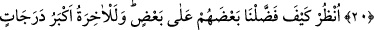

RABBİ’NİN İHSÂNI
SINIRSIZDIR
18. Her kim çabucak geçen bu dünyayı dilerse ona, yâni dilediğimiz kimseye
dilediğimiz kadarını hemen verir, sonra da onu, kınanmış ve kovulmuş olarak
cehenneme koyarız.
19. Kim de âhireti diler ve bir mü’min olarak kendine yaraşır bir çaba ile âhiret
için çalışırsa, işte bunların çalışmaları makbuldür.
20. Hepsine, onlara da bunlara da Rabbinin ihsanından veririz. Rabbinin ihsanı
kısıtlanmış değildir.
21. İnsanların kimini kiminden nasıl üstün kıldığımıza bir bak! Elbette ki âhiret,
derece ve üstünlük bakımından daha büyüktür.
22. Allah ile beraber bir başka ilah edinme, yoksa kınanmış ve yalnız başına
bırakılmış olarak oturup kalırsın.
“Her kim çabucak geçen bu dünyayı dilerse” her kim himmetinin düşük olması
yüzünden amelleriyle sadece dünya hayatını, dünyadaki çeşitli güzellikleri isterse -ki
bunu isteyenler kâfirler, fâsıklar, riyâ ehli, münâfıklar, dünyalık için hicret edenler ve
sadece ganimet elde etmek ve meşhur olmak için cihâd edenlerdir- “ona, yâni
dilediğimiz kimseye dilediğimiz kadarını hemen verir,” Onlara istediklerinden
dilediğimizi âcilen veririz. Dünya nimetlerinden dilediğini yesinler diye hemen
istediklerimizi veririz. Çünkü hikmet herkesin istediği şeyi elde etmesini gerektirmez.
Allah bazı kullarını öyle bir taleb ile imtihan eder ki onun matlûbu hâsıl olmaz.
Bazılarını da öyle bir taleble imtihan eder ki onun matlûbu hâsıl olur. Bu talebde şart
koşulan ya o talebin hemen peşinde ya da sonra meydana gelir. Çünkü talebin vakti
bazen matlûbun hâsıl olma vaktinden ayrı olur. Taleb bir vakitte, matlûb başka bir